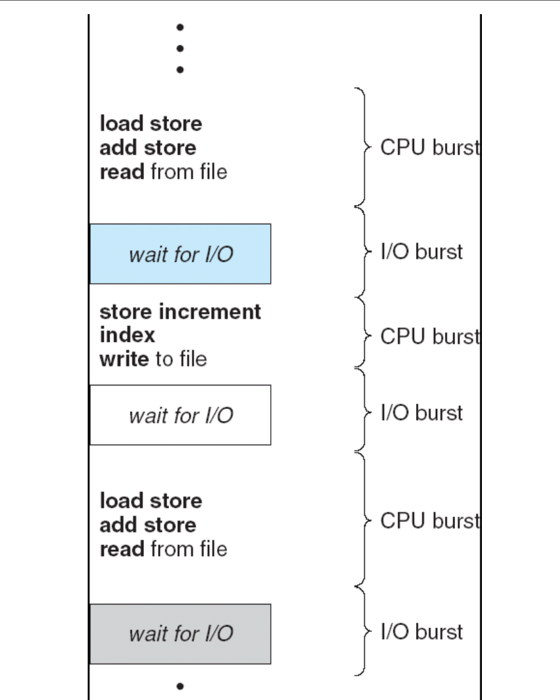
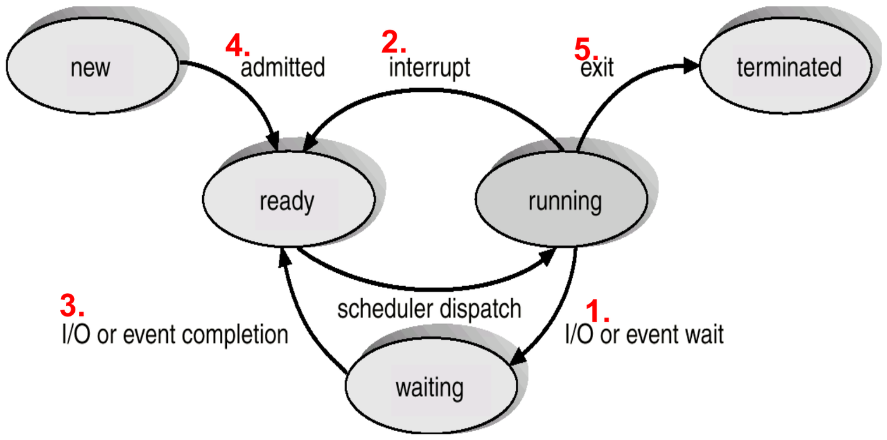
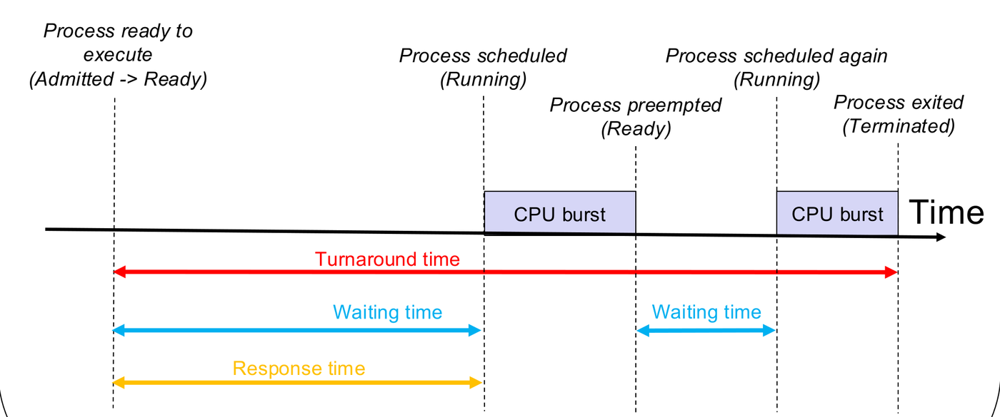
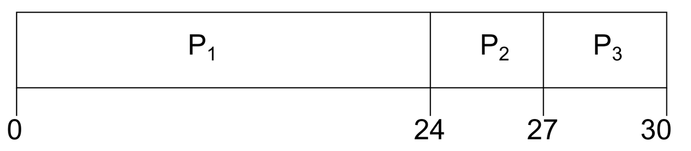
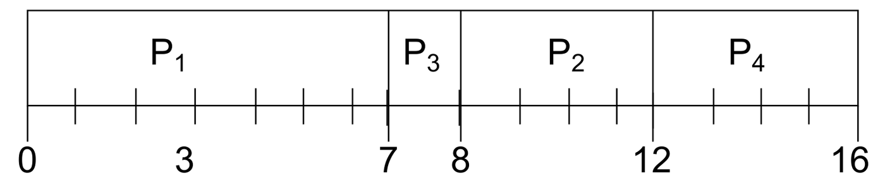
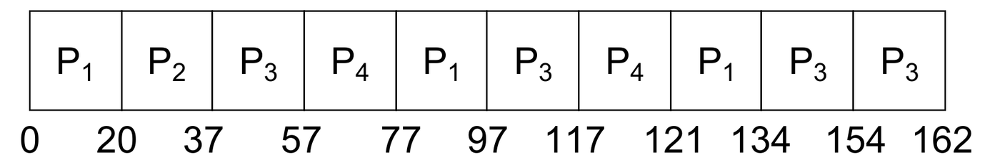
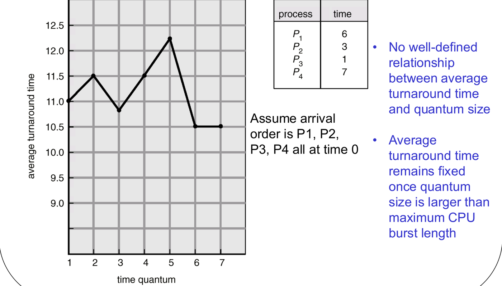
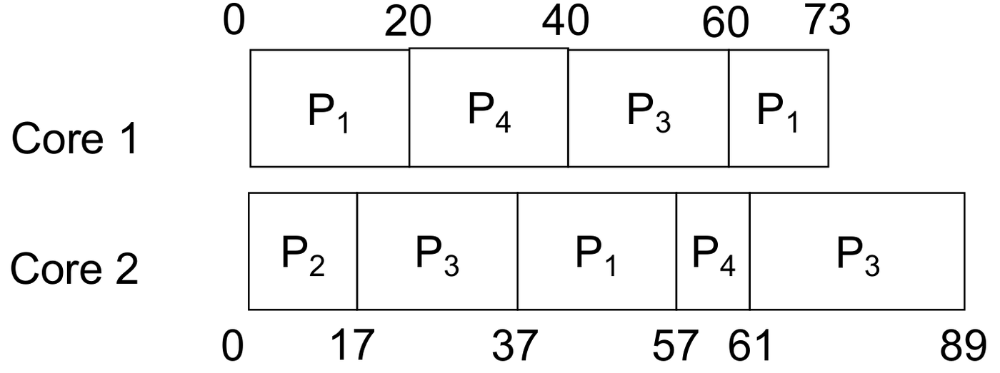
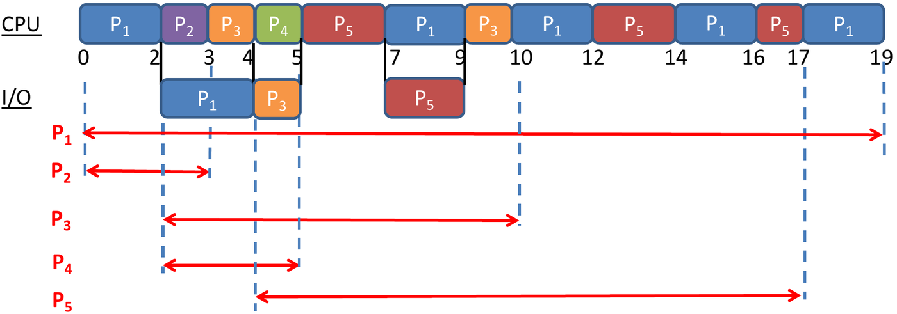
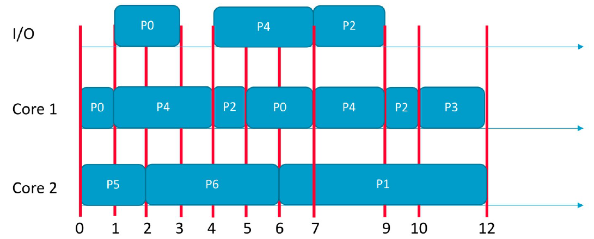

In a multiprogrammed system, multiple processes reside in main memory simultaneously. Whenever the central processing unit becomes idle, the operating system must decide which ready process should be allocated the CPU core.
This selection process is executed by the short-term scheduler (CPU scheduler). This chapter covers the conditions under which scheduling decisions occur, the mathematical metrics used to evaluate scheduler performance, the classic scheduling algorithms on single and multi-core systems, and step-by-step methods for constructing Gantt charts.
1. When the Scheduler Runs: Preemption and Triggers
The CPU–I/O Burst Cycle
Process execution consists of an alternating cycle of CPU bursts (active computation) and I/O bursts (waiting for data transfer completion):

Processes typically alternate between these two phases until terminating. The fundamental objective of CPU scheduling is to overlap computation with I/O: while one process blocks on an I/O burst, the CPU scheduler allocates the processor to another ready process.
The Five Scheduling Invocation Points
A CPU scheduling decision can occur under any of five process state transitions:

| # | State Transition | Trigger Event | Does the CPU Core Become Idle? |
|---|---|---|---|
| 1 | Running Waiting | Process initiates an I/O request or waits for an event/signal. | Yes |
| 2 | Running Ready | An external interrupt occurs (e.g. hardware timer quantum expired). | No (current process can still run) |
| 3 | Waiting Ready | An I/O operation or external event completes. | No (current process can still run) |
| 4 | New Ready | A newly instantiated process is admitted to the system. | No (current process can still run) |
| 5 | Running Terminated | The running process completes execution (exit()) or
aborts. |
Yes |
Preemptive vs. Nonpreemptive Scheduling
Operating systems fall into two distinct scheduling paradigms based on when they invoke the scheduler:
- Nonpreemptive (Cooperative) Scheduling:
- The scheduler executes strictly under transitions 1 and 5.
- Once a process is allocated the CPU, it keeps the processor until it voluntarily yields control—either by terminating or by blocking on an I/O operation.
- Transitions 2, 3, and 4 do not interrupt the currently running process.
- Preemptive Scheduling:
- The scheduler can intervene under all transitions (1, 2, 3, 4, and 5).
- The OS can forcibly take the CPU away from a running process when a higher-priority process arrives (transitions 3 or 4) or when its allocated time slice expires (transition 2).
[!IMPORTANT] Only Transitions 1 and 5 Force Scheduling: The CPU scheduler must run only when a core becomes idle (transitions 1 and 5). Under transitions 2, 3, and 4, the currently executing process can continue running unless the scheduling policy is explicitly preemptive.
Tutorial 3 Q1: True/False Scheduling Triggers & Multi-Core Overhead
Question: State whether each statement is true or false with justification: (a) When a new process is admitted into the system, the short-term scheduler must execute in order to keep the CPU busy. (b) Partitioned multi-processor scheduling suffers from migration overheads due to data in private core-specific caches.
Answer:
- (a) False. To keep the CPU busy, the short-term scheduler is required to execute only when the running process terminates or blocks on I/O, because only then does the processor become idle. When a new process is admitted (transition 4), the scheduler only needs to execute if the CPU is currently idle; if a process is already running, execution continues without scheduling.
- (b) False. Cache migration overhead occurs exclusively in global (SMP) scheduling, where a process can be preempted on one core and resumed on another core, invalidating the first core’s private L1/L2 caches. In partitioned (AMP) scheduling, each process is permanently assigned to a dedicated core and never migrates. Partitioned scheduling instead suffers from unbalanced loads.
AY Past-Paper Checks: Preemption Scenarios
- AY15/16 S2 Q1a(v): If in a CPU scheduling policy a process can transit from running to waiting, the policy is preemptive. False. Transition from running to waiting occurs when a process voluntarily requests I/O; this occurs in both nonpreemptive and preemptive systems. Preemption specifically means the OS takes the CPU away while the process is still capable of computing.
- AY18/19 S2 Q1a(iii): CPU scheduling is non-preemptive if it only happens when all processes are ready. False. Nonpreemptive scheduling happens exclusively when the running process terminates or blocks on I/O.
- AY17/18 S2 Q1a(iii): CPU scheduling is preemptive if it happens only when a new process is admitted. False. Preemptive scheduling can occur at any interrupt (timer ticks, I/O completion, admission).
2. Scheduling Criteria and Performance Metrics
Operating systems evaluate and optimize CPU scheduling algorithms using five standard criteria:

| Metric | Definition | Optimization Goal |
|---|---|---|
| CPU Utilization | The percentage of time that CPU cores are actively executing user or kernel processes. | Maximize (typically 40% to 90%). |
| Throughput | The number of completed processes per unit of time. | Maximize. |
| Turnaround Time () | The total elapsed interval from the moment a process arrives to the moment it completes: | Minimize. |
| Waiting Time () | The total time a process spends sitting in the Ready Queue waiting for CPU allocation: | Minimize. |
| Response Time () | The elapsed time from process arrival until the processor first begins executing it: | Minimize (crucial for interactive systems). |
[!WARNING] High-Yield Trap: Waiting Time Excludes I/O: Waiting time measures only time spent in the Ready Queue. Time spent actively performing I/O or waiting inside an I/O device queue does not count toward CPU waiting time!
3. Uniprocessor Scheduling Algorithms
1. First-Come, First-Served (FCFS)
Processes are dispatched strictly in the order of their arrival in the ready queue. FCFS is completely nonpreemptive.


- The Convoy Effect: If a long CPU-bound process arrives first, all short I/O-bound processes queue behind it like cars behind a slow truck. This causes substantial drops in CPU and device utilization, resulting in high average waiting times.
2. Shortest-Job-First (SJF) and Shortest-Remaining-Time-First (SRTF)
Associates each process with the length of its next CPU burst:
- Nonpreemptive SJF: Once a process is dispatched, it runs to completion of its current CPU burst.
- Preemptive SJF (SRTF): When a new process arrives, the scheduler compares its CPU burst against the remaining time of the currently executing process. If the new burst is strictly shorter, the running process is preempted.


- Optimality: SJF/SRTF is provably optimal—it delivers the minimum possible average waiting time for any given set of processes. Moving a shorter job ahead of a longer job decreases the shorter job’s wait time by more than it increases the longer job’s wait time.
- Limitations: The OS cannot know the exact duration of future CPU bursts in advance (must predict using exponential smoothing). Long processes can suffer from starvation (indefinite blocking) if a steady stream of short jobs continues arriving.
3. Priority Scheduling
Each process is assigned a priority integer. The CPU core is allocated to the process with the highest priority (standard convention: smaller integer = higher priority). Can be preemptive or nonpreemptive.
- Starvation & Aging: A major vulnerability is that low-priority processes can starve indefinitely. The universal solution is Aging—gradually increasing the priority of processes that have waited in the ready queue for extended durations.
- (Note: FCFS is priority scheduling where priority = arrival order; SJF is priority scheduling where priority = burst length).
4. Round-Robin (RR) Scheduling
Designed specifically for time-sharing and interactive systems. The scheduler defines a small unit of time called a time quantum () (typically 10–100 ms). The ready queue is managed as a circular FIFO queue:

- If a process finishes its burst within , it voluntarily releases the CPU.
- If a process’s burst exceeds , a hardware timer interrupts the CPU, context-switches the process, and appends it to the tail of the ready queue.
- Bounded Delay: With ready processes and quantum , no process waits more than time units for its next turn.


- Quantum Sizing Trade-Off:
- : Round Robin degenerates into FCFS.
- : Excessive context switching causes massive CPU overhead, degrading useful throughput.
- Rule of thumb: of CPU bursts should be shorter than .
5. Multilevel Queue Scheduling
Partitions the ready queue into multiple distinct queues categorized by process type:
- Foreground Queue (Interactive): Scheduled via Round-Robin for fast response.
- Background Queue (Batch): Scheduled via FCFS for minimal switching overhead.
Inter-Queue Scheduling:
- Fixed Priority: Serve foreground queue first; background queue runs only when foreground is empty. Vulnerable to starvation.
- Time Slicing: Each queue receives a calibrated share of CPU time (e.g. 80% to foreground, 20% to background). Guarantees progress for all queues.
Algorithm Comparison Summary
| Algorithm | Preemptive? | Primary Advantage | Major Weakness |
|---|---|---|---|
| FCFS | No | Simple, minimal scheduler overhead. | Convoy effect; high average waiting time. |
| SJF | No | Minimizes average waiting time for nonpreemptive systems. | Requires future burst prediction; long jobs starve. |
| SRTF | Yes | Absolute minimum average waiting time. | High preemption overhead; starvation. |
| Priority | Either | Reflects external importance/urgency. | Starvation (mitigated by aging). |
| Round Robin | Yes | Excellent interactive response; fair. | Higher average waiting time; context-switch overhead if is small. |
| Multilevel Queue | Per queue | Matches scheduling policy to process characteristics. | Lower-tier queues risk starvation under fixed priority. |
4. Multiprocessor Scheduling: Partitioned (AMP) vs. Global (SMP)
When multiple CPU cores are available, scheduling policies divide into two architectures:
| Feature | Partitioned Scheduling (Asymmetric, AMP) | Global Scheduling (Symmetric, SMP) |
|---|---|---|
| Ready Queue Structure | One private ready queue per core. | One unified, shared ready queue across all cores. |
| Core Assignment | Each process is permanently assigned to a specific core upon creation. | Any idle core dispatches the next ready process from the shared queue. |
| Process Migration | Zero migration: A process executes exclusively on its designated core. | Allowed: A process can be preempted on Core 1 and resume on Core 2. |
| Primary Drawback | Unbalanced load: Core 1 can sit completely idle while Core 2 is overloaded. Optimal task partitioning is NP-hard. | Cache migration overhead: Moving across cores invalidates private L1/L2 caches. Synchronization bottlenecks on the shared queue. |


5. Calculation Toolkits & Step-by-Step Methods
Toolkit 1: Universal Tie-Breaking Order for Ready Queues
When multiple processes enter the ready queue at the exact same time instant, apply the standard course convention:
Toolkit 2: Step-by-Step Gantt Chart Construction
- Step through Time Events: Advance time to the next
critical event:
- A process arrives.
- A running process completes its CPU burst.
- A Round-Robin time quantum expires.
- An I/O burst finishes.
- Handle I/O & Device Queues:
- A process completing a CPU burst that requires I/O moves to the device queue.
- If the I/O device is currently busy, the process queues in FIFO order. Gaps waiting in the device queue are device-queue time, NOT CPU waiting time.
- Dispatch to Available Cores:
- Single Core: Dispatch head of ready queue based on algorithm rule.
- Multi-Core SRTF: When a new process arrives, compare its burst against the longest remaining burst among currently running processes across all cores. If shorter, preempt that core!
- Calculate Times:
- .
- .
- Sanity Check: Verify that equals the sum of idle durations spent in the ready queue.
Toolkit 3: CPU Efficiency Under Round Robin (Tutorial 3 Q4)
For a process running for average time before blocking, with context switch overhead and quantum :

- To find minimum quantum for target efficiency :
6. Worked Tutorial & Exam Problems
Tutorial 3 Q2: Gantt Charts with Interleaved I/O (RR vs. Dual-Core SRTF)
Problem Setup: Processes share a single I/O device.
- P1: CPU 2, I/O 2, CPU 8 (arr: 0, order 1)
- P2: CPU 1, I/O 0 (arr: 0, order 2)
- P3: CPU 1, I/O 1, CPU 1 (arr: 2, order 1)
- P4: CPU 1, I/O 0 (arr: 2, order 2)
- P5: CPU 2, I/O 2, CPU 3 (arr: 4)
(a)(i) Round-Robin (, Uniprocessor):

- Time 0: P1 runs (0–2) enters I/O (2–4). P2 arrives.
- Time 2: P3, P4 arrive. Queue: P2, P3, P4. P2 runs (2–3) terminates.
- Time 3: P3 runs (3–4) enters I/O. (Device busy until 4, so I/O runs 4–5).
- Time 4: P5 arrives (new), P1 returns from I/O. Applying tie rule (new before return): Queue: P4, P5, P1. P4 runs (4–5) terminates.
- Time 5: P3 returns from I/O. Queue: P5, P1, P3. P5 runs (5–7) enters I/O (7–9).
- Time 7: P1 runs (7–9, 6 left).
- Time 9: P1 preempted, P5 returns from I/O. Tie rule: Queue: P3, P1, P5. P3 runs (9–10) terminates.
- Execution interleaves between P1 and P5 until completion at time 19.
(a)(ii) Global SRTF (2 Cores):

- Time 0: Core 1 runs P1 (burst 2), Core 2 runs P2 (burst 1). P2 terminates at 1 (Core 2 idle 1–2).
- Time 2: P1 enters I/O (2–4). P3 (burst 1) and P4 (burst 1) arrive; dispatched to Core 1 and Core 2.
- Time 3: P3 finishes CPU burst. Device busy with P1 until 4, so P3 waits in device queue (3–4), then runs I/O (4–5).
- Time 4: P1 returns from I/O (burst 8). P5 arrives (burst 2). Both cores free Core 1 runs P1, Core 2 runs P5.
- Time 5: P3 returns from I/O (burst 1). P1 has 7 remaining, P5 has 1 remaining. P3 preempts P1 (longest remaining) on Core 1 P3 runs (5–6) and terminates.
- Time 6: P5 enters I/O (6–8). Core 1 resumes P1 (runs 6–13).
- Time 8: P5 returns from I/O (burst 3) Core 2 runs P5 (8–11).
(b) Turnaround & Waiting Times:

| Process | RR Turnaround () | RR Waiting () | SRTF Turnaround () | SRTF Waiting () |
|---|---|---|---|---|
| P1 | ||||
| P2 | ||||
| P3 | ||||
| P4 | ||||
| P5 |
Tutorial 3 Q3: Reverse-Engineering Dual-Core Schedules
Problem Setup: Arrivals: P0, P1, P4, P5, P6 at 0; P2 at 3; P3 at 9.

(a) CPU and I/O Burst Durations:
- P0: CPU 1, I/O 2, CPU 2
- P1: CPU 6
- P2: CPU 1, I/O 2, CPU 1 (Note: P2 finishes CPU at 5, but waits in device queue until 7 because P4 uses I/O 4–7)
- P3: CPU 2
- P4: CPU 3, I/O 3, CPU 2
- P5: CPU 2
- P6: CPU 4
(b) Architecture and Algorithm Identification:
- Partitioned Scheduling is consistent:
- Core 2 executes only P5, P6, P1 (never runs P0, P2, P3, P4). It executes shortest bursts first SJF or SRTF.
- Core 1 executes P0, P4, P2, P3. FCFS is ruled out (at time 4, ready P0 does not run ahead of P4). Both SJF and SRTF match execution.
- Global Scheduling is inconsistent with SRTF: At time 3, P2 (burst 1) arrives but does not preempt P6 (remaining burst 3) on Core 2. However, Global SJF is valid if ordered by current burst duration.
Tutorial 3 Q4: CPU Efficiency Formula Derivation
Question: Average process runs for before blocking; context switch overhead is . Give CPU efficiency for: (a) , (b) , (c) , (d) , (e) .
Derivation:
| Case | Number of Switches () | Efficiency Formula |
|---|---|---|
| (a) | 1 | |
| (b) | 1 | |
| (c) | ||
| (d) | ||
| (e) |
AY Past-Paper Problems: Gantt Charts & Time Metrics
- AY16/17 S2 Q1b (SJF vs. SRTF):
- P1(arr 0, b 5), P2(arr 2, b 4), P3(arr 4, b 4), P4(arr 5, b 3), P5(arr 2, b 2).
- SJF: P1(0–5), P5(5–7), P4(7–10), P2(10–14),
P3(14–18).
- Waits: P1:0, P2:8, P3:10, P4:2, P5:3 Average Wait = 4.6.
- SRTF: P1(0–2), P5(2–4), P1(4–7), P4(7–10),
P2(10–14), P3(14–18).
- Waits: P1:2, P2:8, P3:10, P4:2, P5:0 Average Wait = 4.4.
- AY18/19 S1 Q1b (SRTF with Interleaved I/O):
- P1(arr 0, CPU 1, I/O 2, CPU 4); P2(arr 1, CPU 1, I/O 2, CPU 3); P3(arr 2, CPU 3); P4(arr 3, CPU 2).
- Chart: P1(0–1), P2(1–2), P3(2–5), P4(5–7), P2(7–10), P1(10–14).
- Turnaround: P1 = 14, P2 = 9, P3 = 3, P4 = 4.
- Waiting (): P1 = 7, P2 = 3, P3 = 0, P4 = 2.
- AY19/20 S1 Q1b (Minimizing Maximum Waiting Time in
RR):
- P1(arr 0, b 4), P2(arr 0, b 4), P3(arr 3, b 2), P4(arr 5, b 2).
- For ; for ; for ; for .
- Choosing minimizes maximum waiting time while eliminating redundant context switches.